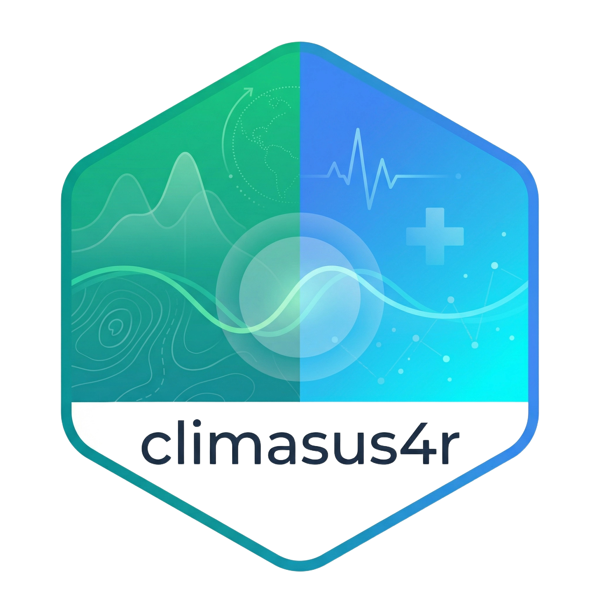
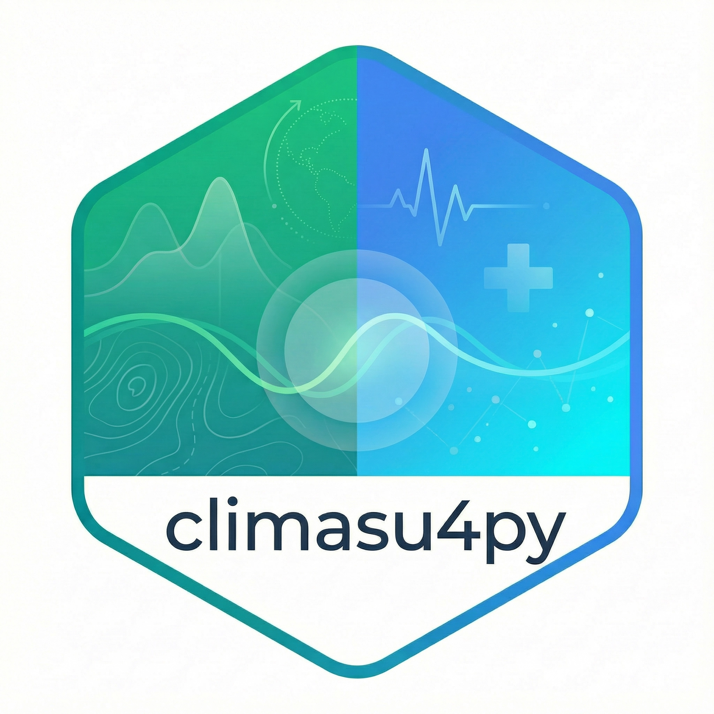
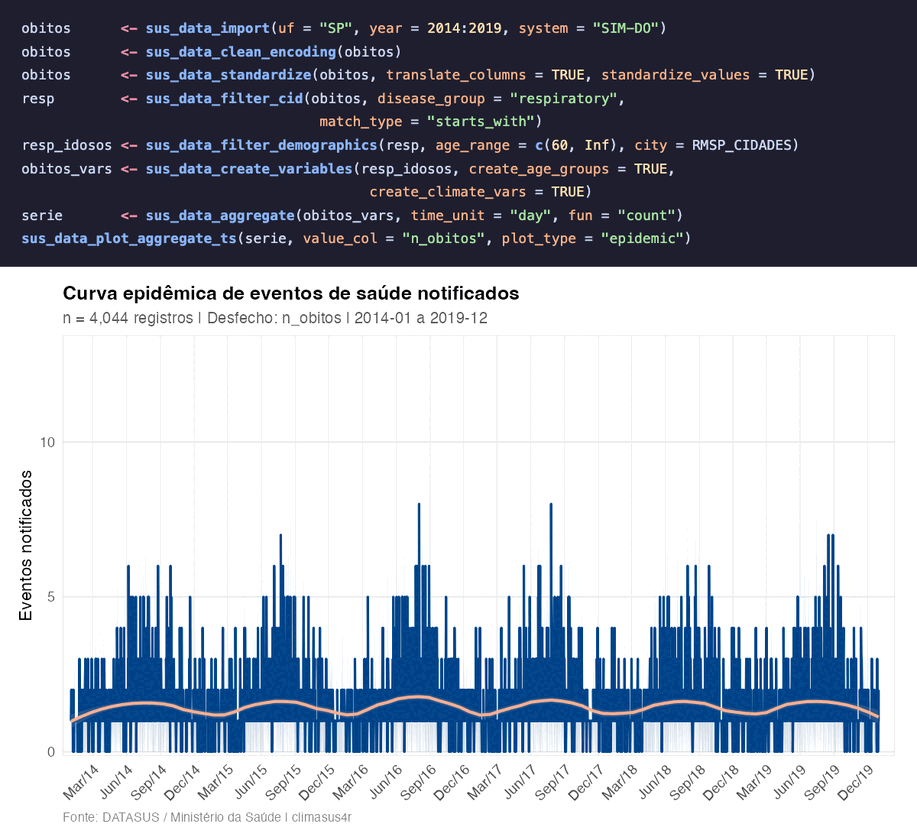
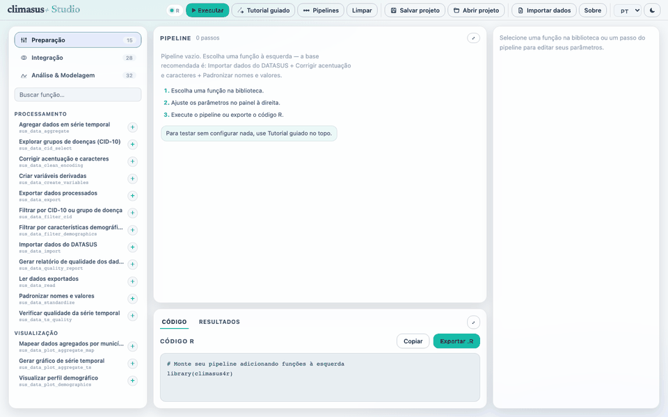
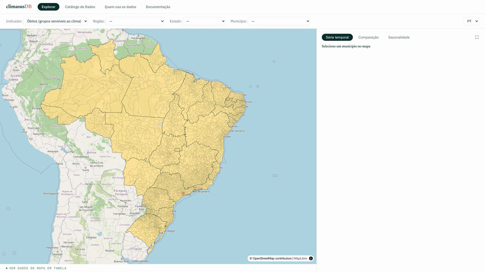
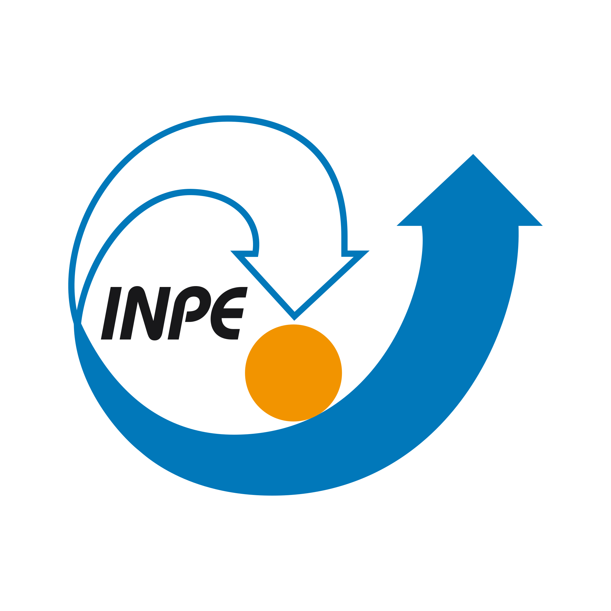
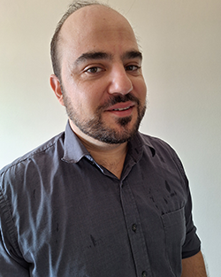

01 · Biblioteca R

climasus4rPipeline completo de análise clima‑saúde em R: importação do DATASUS, integração climática, DLNM, meta‑análise e síntese estratégica.
DADOS · ANÁLISE · PESQUISA
Ciência do clima, dados ambientais e saúde pública — em código aberto, para antecipar os impactos do clima sobre quem mais precisa.
Da biblioteca científica ao alerta no rádio comunitário — cada componente preenche uma camada da mesma infraestrutura.

climasus4rPipeline completo de análise clima‑saúde em R: importação do DATASUS, integração climática, DLNM, meta‑análise e síntese estratégica.

climasus4pyMesmo arcabouço científico em Python, voltado a pipelines de dados e aprendizado de máquina.
As mesmas funções científicas em ponto‑e‑clique, para gestores e técnicos do SUS sem programação.
A plataforma de dados integrados de clima, saúde e ambiente do Brasil — já processados pelas bibliotecas e prontos para análise.
Formação de gestores, técnicos e pesquisadores em clima e saúde — porque tecnologia sem capilaridade institucional não vira política pública.
Onde os sistemas de alerta precoce multi‑perigo são executados: calor, cheias, qualidade do ar e secas, cada um com seus canais.
As bibliotecas científicas são o motor de todo o ecossistema. Importam dados brutos do SUS, integram clima e território, e chegam à modelagem causal — tudo reprodutível e em código aberto.


A plataforma interativa traz as funções das bibliotecas para gestores e técnicos do SUS em ponto‑e‑clique: mapas, séries temporais, relatórios — sobre o mesmo motor científico.

O data commons do ecossistema: reúne, harmoniza e publica numa única grade — município (IBGE) × tempo — os dados que hoje vivem espalhados em dezenas de fontes. Tudo já processado pelas bibliotecas climasus4r e climasus4py, versionado e pronto para pesquisadores, gestores e o público.
O climaSUS EDUCA forma profissionais de saúde, gestores e pesquisadores para usar — e sustentar — o ecossistema em todas as escalas do SUS. Além de produzir materiais informativos acessíveis e de qualidade para a população.
O aplicativo do gestor municipal de saúde. Recebe os alertas do climasusAlerta e conduz quem decide por três perguntas: o que está acontecendo, como isso já afeta a população e o que fazer hoje. Cada ação confirmada é registrada com horário e responsável.
Uma rede colaborativa de pesquisadores, desenvolvedores, comunicadores e gestores de instituições brasileiras e internacionais, unida pela ciência aberta, pelo fortalecimento do SUS e pela inovação em clima e saúde.
 UFJF · Fiocruz‑RO (CCSRO) · INCT‑Conexão
UFJF · Fiocruz‑RO (CCSRO) · INCT‑Conexão
 Universidade de São Paulo (USP)
Universidade de São Paulo (USP)
 UNESP · Univ. Federal de Rondônia (UNIR)
UNESP · Univ. Federal de Rondônia (UNIR)
Fundação Oswaldo Cruz Rondônia
 UNESP
UNESP
Universidade Federal de Viçosa · UFV
Universidade do Estado do Rio de Janeiro · UERJ
 UNIR · Fiocruz‑RO (CCSRO)
UNIR · Fiocruz‑RO (CCSRO)
Fundação Oswaldo Cruz Rondônia (CCSRO)
 UNIR · CIBEBI
UNIR · CIBEBI
 Harvard T.H. Chan School of Public Health
Harvard T.H. Chan School of Public Health
 Universidade Federal do Amazonas (UFAM)
Universidade Federal do Amazonas (UFAM)
Univ. do Estado do Rio de Janeiro (UERJ)
 Ministério da Saúde · DEMSP · Fiocruz Manaus
Ministério da Saúde · DEMSP · Fiocruz Manaus
 Universidade de São Paulo (USP)
Universidade de São Paulo (USP)

INPE · Instituto Nacional de Pesquisas Espaciais
FC
 Universidade Federal do Rio Grande do Norte (UFRN)
Universidade Federal do Rio Grande do Norte (UFRN)
Universidade do Estado do Rio de Janeiro (UERJ)
 AV
AV
 Departamento de Clínica Médica · UNESP Botucatu
Departamento de Clínica Médica · UNESP Botucatu